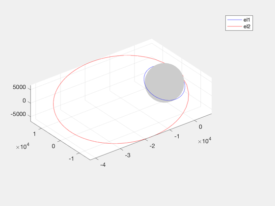
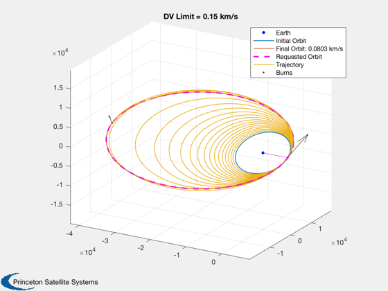

Contents
LEO to GTO single-rev impulsive demo
This is a transfer with a single optimal burn at apogee.
See also: OptDIH, TargetElementsImpulsiveAnalytic, OptimizeImpulsiveLVLH
%-------------------------------------------------------------------------- % Copyright (c) 2019 Princeton Satellite Systems, Inc. % All rights reserved. %-------------------------------------------------------------------------- % Start: LEO inc = 28.6*pi/180; elInit = [6378+500 inc 0 0 0 2*pi*rand(1)]; % Highly eccentric GTO orbit sma = 24582; ecc = 42164/sma - 1; fracI = 0.2; % fraction of inclination to remove elFinal = [24582 (1-fracI)*inc 0 0 ecc 0]; PlotTwoOrbits(elInit,elFinal) % Analytic Solution [DV, dv1, dv2, et, Di1] = OptDIH( 0, elInit(1), elFinal(5), elFinal(1), -fracI*inc ); fprintf('\n\nAnalytic DV: %g km/s\n',DV)
ans =
Figure (PlotPSS) with properties:
Number: 1
Name: 'Two Orbits'
Color: [0.940000000000000 0.940000000000000 0.940000000000000]
Position: [560 528 560 420]
Units: 'pixels'
Use GET to show all properties
Analytic DV: 2.49211 km/s
 Impulse solution search; <1 sec
burnsTarget = TargetElementsImpulsiveAnalytic(elInit,elFinal); burnsTarget = RemoveTrivialBurnsImpulsive(burnsTarget); tic fprintf('Optimizing with analytic targeting...') [burns1,elOut,opt] = OptimizeImpulsiveLVLH(elInit,elFinal); toc disp('...finished.') dVopt = sum(burns1(:,1)); OptimizerReport(opt,true) fprintf('\nError in DV from analytic: %g km/s\n',dVopt-DV); PlotImpulsiveTrajectory(elInit, burns1, elFinal,'lvlh' ); titleStr = sprintf('Total DV = %.2g km/s',sum(burns1(:,1))); title(titleStr)
Optimizing with analytic targeting...Elapsed time is 0.677917 seconds.
...finished.
Total Delta-V (km/s):
2.491915811696017
Number of burns:
2
Initial elements, target, achieved:
1.0e+04 *
Columns 1 through 3
0.687800000000000 0.000049916416607 0
2.458200000000000 0.000039933133286 0
2.452099999999995 0.000044790143147 0
2.458199999999993 0.000039933133286 0.000628318530718
Columns 4 through 6
0 0 0.000079788169834
0 0.000071523879261 0
0.000000000002107 0.000071950572978 -0.000000000000447
0.000000000003332 0.000071523879261 0.000314159259086
Mission duration:
6.68409 Time (hours)
Cost value:
2.491915811696017
Iterations:
221
Burns (lvlh: DV, alpha, beta, dT):
Columns 1 through 3
2.411579936488285 0.000000075777059 -0.213727761915889
0.080335875207731 -0.000003315640222 1.440924173404147
Column 4
0.873013179684899
0.500000000000000
Error in DV from analytic: -0.000198306 km/s

Implement with a DV limit per rev
burnMaxDeltaV = 0.15; burnsL = BreakImpulsesByDeltaV(burns1,burnMaxDeltaV,elInit); PlotImpulsiveTrajectory(elInit, burnsL, elFinal,'lvlh'); titleStr = sprintf('DV Limit = %.2g km/s',burnMaxDeltaV); title(titleStr) return;
Loop
M0 = linspace(0,2*pi,50); dVs = zeros(1,length(M0)); d.doPlot = false; TimeDisplay( 'initialize', 'Optimize Burns', length(M0) ); for k = 1:length(M0) TimeDisplay( 'update' ); elInit(6) = M0(k); [burns2] = OptimizeImpulsiveLVLH(elInit,elFinal); %[burns2,elOut,opt] = OptimizeElementsImpulsiveSearch(elInitial,elFinal,burns0,d); dVs(k) = sum(burns2(:,1)); end TimeDisplay( 'close' ) Plot2D( M0, dVs, 'Initial Mean Anomaly', 'Optimal DV', 'Variation with Start Angle' ) %--------------------------------------